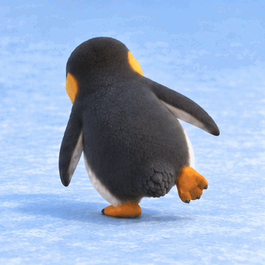
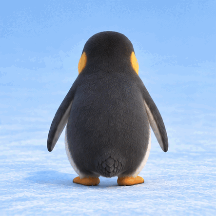
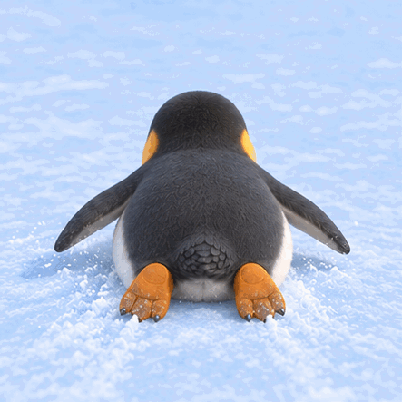

Waddle — stronger lean
Torso and hips roll over each planted foot, passing through upright between short steps.
The infinite runner's gameplay view: a stronger side-to-side waddle, a jump and a low belly slide. One penguin, always facing away from the camera.

Torso and hips roll over each planted foot, passing through upright between short steps.

Preparation, lift, airborne shape and landing. End hold; cut to reset.

Already on belly, gliding low. Small flipper and balance adjustments.

Working reference for visible weight transfer and grounded feet. Read left to right across the top row, then the bottom row.
Pose animatics assembled from generated reference frames. They communicate appearance and key poses; they are not game captures or finished rig animation. Use the candidate runtime preview for final model, materials, motion and camera verification.